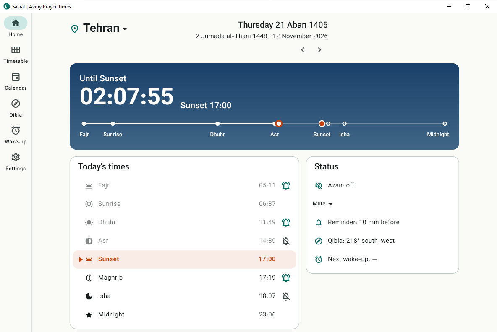

Salaat | Aviny Prayer Times
Prayer times and azan for Windows. It works offline, lives in the system tray and plays the azan on time. No ads, no account, no tracking.
Salaat is for Windows for now. Versions for macOS, Linux and phones do not exist yet.

Download
Choose the file for your computer. Both are free.
| System | File | Status | |
|---|---|---|---|
| Windows 10 / 11 64-bit |
Installer Salaat-Setup.exe
RecommendedPortable ZIP Salaat-windows-x64.zip
SHA256SUMS.txt
|
Available | |
| macOS 10.15+ |
Salaat-macos.zip
Unzip it and move Salaat to Applications. It is not notarised yet, so the first time right-click it and choose Open. |
— | AvailableNot available yet |
| Linux x64 |
Salaat-linux-x64.tar.gz
Unpack it anywhere and run salaat. The tray icon needs AppIndicator support (standard on Ubuntu). |
— | AvailableNot available yet |
| In the browser Any system |
Open the web version
Nothing to install. The azan sounds only while the page is open; for an azan with the app closed, install it on Windows or Android. |
Available | |
| Android Android 7 or later |
Install file Salaat-android.apk
How to install the APKOpen the downloaded file on the phone. Android asks to allow installing apps from your browser or file manager: allow it once, then press Install. On first start, allow notifications so the azan can sound while the app is closed, and allow "Alarms & reminders" when the app asks, so it comes at the exact minute. |
— | AvailableNot available yet |
| iOS | Needs publishing through the App Store; use the web version on iPhone for now. | Not available yet |
Only Windows is supported at the moment. If you need another system, say so on the project page so it can be planned.
Install in four steps
- Download
Press the Download button and save
Salaat-Setup.exe. - Open the file
Windows may say "Windows protected your PC" because the program is new and not signed yet. Press More info, then Run anyway. You can compare the checksum with
SHA256SUMS.txtfirst. - Install
Press Next. No administrator rights are needed. You can tick "Start with Windows" here or later in the settings.
- Choose language and city
The first start asks for your language (eight are offered), your city and an azan sound. For a city outside Iran choose Any city in the world and search by name (for example "Mumbai, India"). The internet is needed once for that search; afterwards the app works offline.
Portable version (no installer)
Download Salaat-windows-x64.zip, extract it to any folder and run salaat.exe. Settings are kept in %APPDATA%\Salaat\Salaat.
After installing
- The tray icon (near the clock) keeps Salaat running. Close the window and it stays there to play the azan.
- Qibla page: the map shows the shortest path to the Kaaba, in street or satellite style. The compass tab works without the internet.
- To uninstall: Settings > Apps > Salaat. You are asked whether to keep your settings.
What it looks like
Screenshots from Windows 10. The program looks the same on Windows 11.
Your privacy
No account, no ads, no tracking. The internet is used only when you ask for it:
- The optional clock check.
- Map pictures, only after you switch the map on.
- Place search, only when you press Search; the text you typed is sent to OpenStreetMap's search service.
- Your position, only when you press "Find my position"; it is never stored.
Common questions
Windows does not let the app read my location
Open Settings > Privacy and security > Location. Turn on Location services and Let desktop apps access your location (Windows 10: Allow desktop apps to access your location). The app has a button that opens this page.
Does it work without the internet?
Yes. Times, azan, calendars and the compass work offline. Only the map pictures and the place search need the internet.
The time is one hour off
Iran has had no daylight saving since 2022 and the app never adds an hour on its own. Check that the Windows time zone is right and open Settings > Time in the app for details.
Is it free?
Yes, and nothing is locked. If you want to support the work, the About page of the app and the project page explain how.
Support and contribute
The code is on GitHub. Bug reports, translations, tests on different computers and code are welcome. You can also support the project financially; the project page lists each way and the countries it works from.